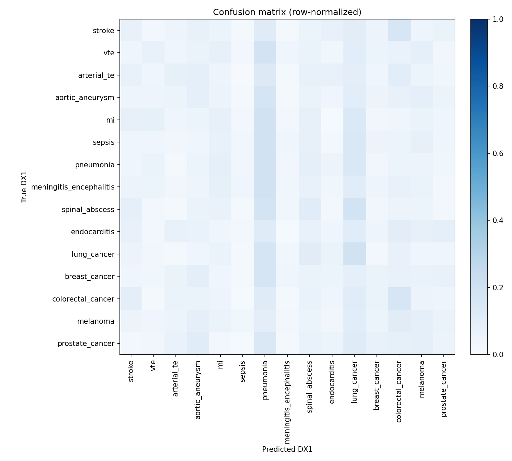
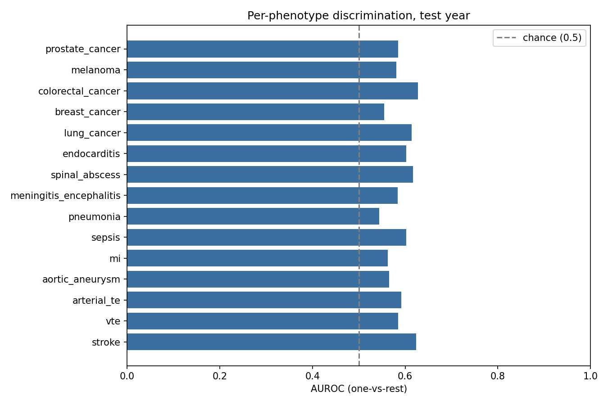
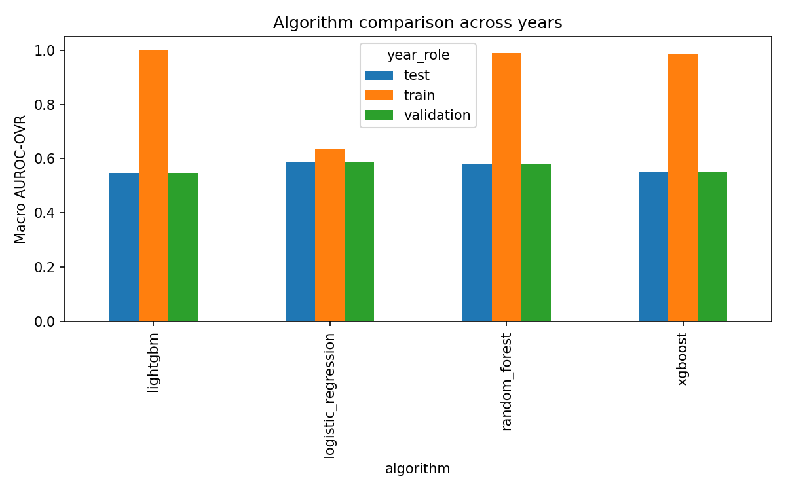

Generated 2026-08-30T00:42:56
H1: Within a leakage-controlled, cross-year-replicated supervised multiclass framework for diagnostic-quality auditing, a hospitalized patient's secondary-diagnosis profile (DX2-DX25) discriminates the principal diagnosis (DX1) among fifteen vascular, infectious, and oncological phenotypes in the U.S. National Inpatient Sample, 2021-2023, under severe class imbalance.
logistic_regression
| metric | value | 95% CI |
|---|---|---|
| Macro AUROC (OVR) | 0.5893 | (0.5893416612701312, 0.5824938866331688, 0.5963087365750279) |
| Macro MCC | 0.0290 | (0.028954855754290333, 0.02181417334614855, 0.034481496201293496) |
| Balanced accuracy | 0.0934 | (0.09335047844806585, 0.08601692136625966, 0.10101236706864762) |
| observed_macro_auroc_ovr | null_mean | null_std | n_permutations | p_value | min_achievable_p | underpowered | significant_at_0.05 |
|---|---|---|---|---|---|---|---|
| 0.5893 | 0.5000 | 0.0035 | 20 | 0.0476 | 0.0476 | False | True |
| phenotype | prevalence | auroc_ovr | auroc_ci_lo | ppv_lift_over_null | statistically_valid | floor_rule_applied | clears_performance_floor | phenotype_supported |
|---|---|---|---|---|---|---|---|---|
| stroke | 0.0714 | 0.6237 | 0.6008 | 1.3383 | True | auroc_ovr>=0.7 | False | False |
| vte | 0.1252 | 0.5847 | 0.5685 | 1.5443 | True | auroc_ovr>=0.7 | False | False |
| arterial_te | 0.0385 | 0.5913 | 0.5632 | 1.7731 | True | auroc_ovr>=0.7 | False | False |
| aortic_aneurysm | 0.0833 | 0.5654 | 0.5448 | 1.3781 | True | auroc_ovr>=0.7 | False | False |
| mi | 0.0168 | 0.5629 | 0.5236 | 1.2246 | True | auroc_ovr>=0.7 | False | False |
| sepsis | 0.1075 | 0.6025 | 0.5868 | 1.3915 | True | auroc_ovr>=0.7 | False | False |
| pneumonia | 0.0479 | 0.5441 | 0.5197 | 1.1905 | True | auroc_ovr>=0.7 | False | False |
| meningitis_encephalitis | 0.1232 | 0.5839 | 0.5660 | 1.2078 | True | auroc_ovr>=0.7 | False | False |
| spinal_abscess | 0.0370 | 0.6167 | 0.5920 | 1.5784 | True | auroc_ovr>=0.7 | False | False |
| endocarditis | 0.0358 | 0.6027 | 0.5766 | 1.0162 | True | auroc_ovr>=0.7 | False | False |
| lung_cancer | 0.0619 | 0.6144 | 0.5860 | 1.6016 | True | auroc_ovr>=0.7 | False | False |
| breast_cancer | 0.0772 | 0.5544 | 0.5324 | 1.2404 | True | auroc_ovr>=0.7 | False | False |
| colorectal_cancer | 0.0857 | 0.6275 | 0.6045 | 1.8269 | True | auroc_ovr>=0.7 | False | False |
| melanoma | 0.0591 | 0.5811 | 0.5575 | 1.3150 | True | auroc_ovr>=0.7 | False | False |
| prostate_cancer | 0.0295 | 0.5851 | 0.5577 | 1.1733 | True | auroc_ovr>=0.7 | False | False |
| macro_auroc_ovr | macro_f1 | weighted_f1 | macro_precision | macro_recall | mcc | balanced_accuracy | brier_multiclass | n | n_classes_present | algorithm | year_role | year |
|---|---|---|---|---|---|---|---|---|---|---|---|---|
| 0.6382 | 0.1053 | 0.1124 | 0.1249 | 0.1388 | 0.0568 | 0.1388 | 0.9228 | 9027 | 15 | logistic_regression | train | 2021 |
| 0.5868 | 0.0827 | 0.1017 | 0.0951 | 0.0923 | 0.0337 | 0.0923 | 0.9301 | 8961 | 15 | logistic_regression | validation | 2022 |
| 0.5893 | 0.0813 | 0.0874 | 0.0938 | 0.0934 | 0.0290 | 0.0934 | 0.9312 | 9043 | 15 | logistic_regression | test | 2023 |
| 0.9905 | 0.8513 | 0.8694 | 0.8273 | 0.9056 | 0.8580 | 0.9056 | 0.7529 | 9027 | 15 | random_forest | train | 2021 |
| 0.5788 | 0.0779 | 0.0935 | 0.0877 | 0.0858 | 0.0230 | 0.0858 | 0.9321 | 8961 | 15 | random_forest | validation | 2022 |
| 0.5825 | 0.0921 | 0.1017 | 0.0979 | 0.1030 | 0.0334 | 0.1030 | 0.9289 | 9043 | 15 | random_forest | test | 2023 |
| 1.0000 | 0.9938 | 0.9920 | 0.9928 | 0.9948 | 0.9913 | 0.9948 | 0.0512 | 9027 | 15 | lightgbm | train | 2021 |
| 0.5448 | 0.0633 | 0.0729 | 0.0955 | 0.0849 | 0.0177 | 0.0849 | 1.1148 | 8961 | 15 | lightgbm | validation | 2022 |
| 0.5466 | 0.0724 | 0.0862 | 0.0921 | 0.0868 | 0.0195 | 0.0868 | 1.0884 | 9043 | 15 | lightgbm | test | 2023 |
| 0.9848 | 0.8303 | 0.8215 | 0.8109 | 0.8645 | 0.8072 | 0.8645 | 0.4402 | 9027 | 15 | xgboost | train | 2021 |
| 0.5519 | 0.0727 | 0.0882 | 0.0840 | 0.0830 | 0.0179 | 0.0830 | 0.9947 | 8961 | 15 | xgboost | validation | 2022 |
| 0.5522 | 0.0774 | 0.0891 | 0.0866 | 0.0859 | 0.0190 | 0.0859 | 0.9888 | 9043 | 15 | xgboost | test | 2023 |
33 secondary-position codes masked from the feature vocabulary for matching a phenotype definition.
| code | matches_phenotypes | n_occurrences_secondary_position |
|---|---|---|
| C340 | lung_cancer | 36 |
| I710 | aortic_aneurysm | 36 |
| C610 | prostate_cancer | 31 |
| I740 | arterial_te | 29 |
| I330 | endocarditis | 26 |
| C500 | breast_cancer | 25 |
| G062 | spinal_abscess | 24 |
| C430 | melanoma | 24 |
| I630 | stroke | 14 |
| C200 | colorectal_cancer | 14 |
| I220 | mi | 14 |
| I820 | vte | 14 |
| C180 | colorectal_cancer | 13 |
| A410 | sepsis | 12 |
| I210 | mi | 12 |
| G061 | spinal_abscess | 12 |
| J160 | pneumonia | 9 |
| G030 | meningitis_encephalitis | 9 |
| I610 | stroke | 9 |
| I800 | vte | 9 |
| I640 | stroke | 9 |
| A400 | sepsis | 8 |
| I600 | stroke | 8 |
| J180 | pneumonia | 8 |
| G040 | meningitis_encephalitis | 7 |
| A870 | meningitis_encephalitis | 7 |
| I260 | vte | 7 |
| J150 | pneumonia | 6 |
| G000 | meningitis_encephalitis | 6 |
| C190 | colorectal_cancer | 5 |
| J130 | pneumonia | 5 |
| J140 | pneumonia | 5 |
| J120 | pneumonia | 3 |


